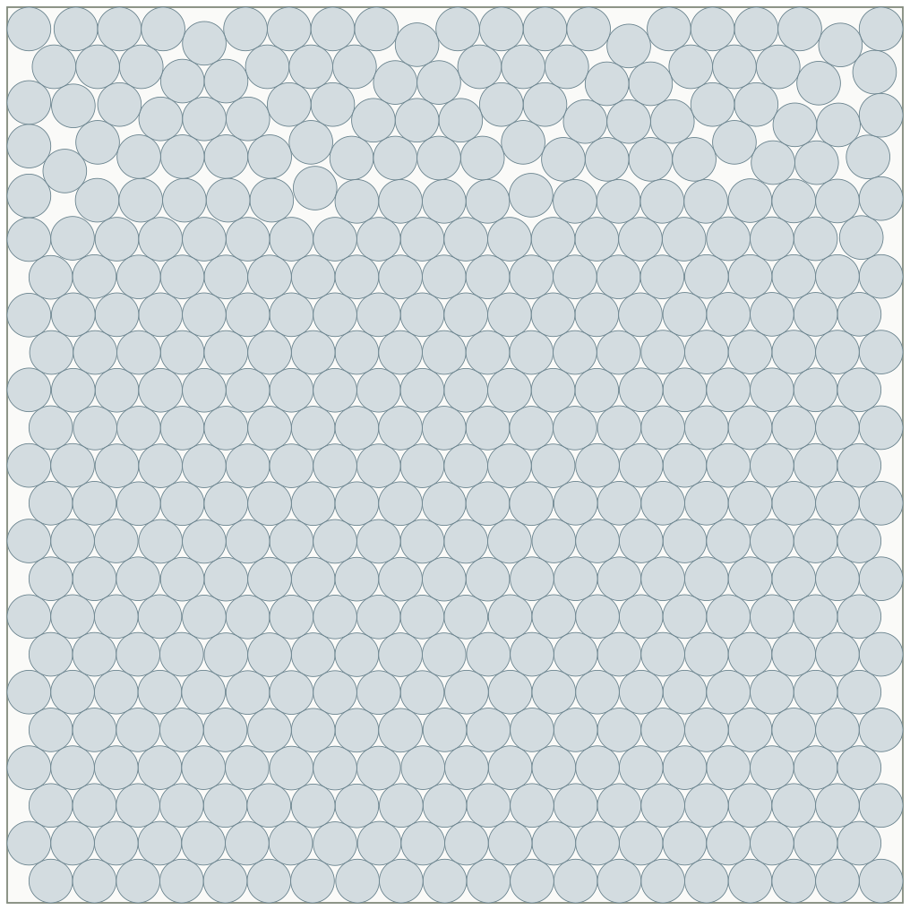

Packing problems
463 circles in a unit square
Equal circles in a unit square; larger radius is better.


This arrangement
0.024353409
Common radius · 8 significant figures
0.0141% larger radius than the value listed on Packomania on 19 October 2026.
| Arrangement | Common radius |
|---|---|
| This arrangement | 0.024353409 |
| Packomania | 0.024349975 |
Difference: 3.4336139e-06 larger radius.
Compared with Packomania’s printed radius, which is rounded to 12 decimal places. The published coordinate file reports the same radius; its centres use a translated unit-square frame.